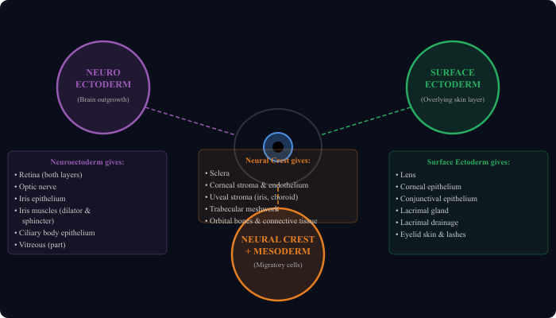
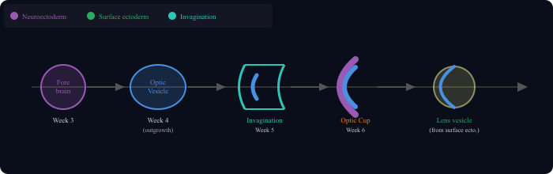
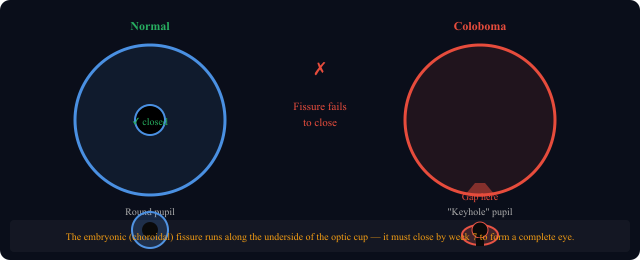

Where each part of the eye comes from: neuroectoderm, surface ectoderm, and neural crest cells



The eye does not develop from a single source. Three completely different cell populations come together to build it. Each one contributes specific structures, and a problem with any one of them causes a specific type of developmental eye disease.
Think of it like building a house: one crew builds the wiring (neuroectoderm), another installs the windows and plumbing (surface ectoderm), and a third crew handles the walls and structural frame (neural crest and mesoderm).
| Source | What It Builds | Memory Hook |
|---|---|---|
| Neuroectoderm (brain outgrowth) |
Retina (both layers), Optic nerve, Iris muscles (dilator + sphincter), Ciliary body epithelium | Everything that processes or responds to light |
| Surface Ectoderm (skin layer over the eye) |
Lens, Corneal epithelium, Conjunctiva, Lacrimal gland, Eyelids and lashes | Everything that touches or covers the eye from outside |
| Neural Crest + Mesoderm (migratory cells) |
Sclera, Corneal stroma and endothelium, Uveal stroma (iris, choroid), Orbital bones, Trabecular meshwork | The structural frame and connective tissue of the eye |
Around week 3 of embryonic life, the developing forebrain pushes out a hollow bud on each side called the optic vesicle. This is where everything starts.
The optic vesicle then invaginates (pushes inward on itself, like pushing your finger into a balloon) to form the optic cup. This double-walled cup is the origin of the retina:
As the vesicle pushes toward the surface ectoderm, it signals that layer to thicken and form the lens placode, which then invaginates to create the lens vesicle. This inductive signaling is two-way: no optic vesicle means no lens, and no lens means the eye stays underdeveloped.
When the optic vesicle invaginates to form the optic cup, a gap forms along the inferior surface of the cup. This gap is called the embryonic fissure (also called the choroidal or fetal fissure).
This fissure is actually useful early on: it allows the hyaloid artery to enter and supply the developing lens. But by week 7 of gestation, the fissure must close completely.
Iris coloboma gives a classic "keyhole" or "cat-eye" appearance to the pupil. The defect is always in the inferior nasal quadrant, pointing directly to the location of the original embryonic fissure.
CHARGE syndrome is one of the systemic associations with coloboma. The C in CHARGE stands for Coloboma. Bilateral posterior colobomas involving the optic nerve carry the worst visual prognosis.
| Week of Gestation | Event |
|---|---|
| Week 3 | Optic groove forms in developing forebrain (neuroectoderm) |
| Week 4 | Optic vesicle pushes out; reaches surface ectoderm; lens placode begins |
| Week 5 | Optic vesicle invaginates; lens vesicle forms |
| Week 6 | Optic cup fully formed; hyaloid artery enters through embryonic fissure |
| Week 7 | Embryonic fissure closes (failure = coloboma) |
| Week 8 | Eyelids begin to form; cornea becomes transparent |
| Months 3–5 | Eyelids fused; photoreceptors differentiate; iris sphincter forms |
| Week 26–28 | Eyelids reopen; retinal vessels reach periphery |
| Full term | Retinal development mostly complete; foveal maturation continues after birth |
Retinopathy of Prematurity (ROP): Premature babies (born before retinal vessels reach the periphery) develop abnormal retinal vascularization. Peripheral retina is avascular. High oxygen therapy in incubators worsens this. Regular screening with indirect ophthalmoscopy is mandatory for premature neonates.